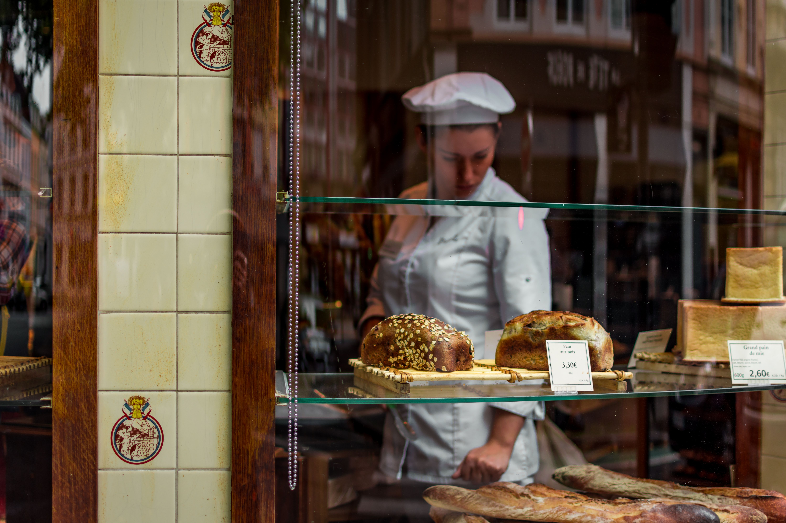

Our Story
Founded as a home-based kitchen in 2021, it moved into an actual suburban shop in 2024.
At The Daily Crumb, we believe that everyone deserves access to fresh, high-quality meals that fit seamlessly into their busy lives.

Our Core Values
100% Artisanal
We craft our breads and pastries by hand using traditional methods and locally sourced ingredients.
Natural Ingredients
We prioritize natural ingredients, avoiding artificial additives and preservatives in our products.
Community First
We partner with local cafés and businesses to provide trustworthy food solutions, supporting our community's culinary landscape.